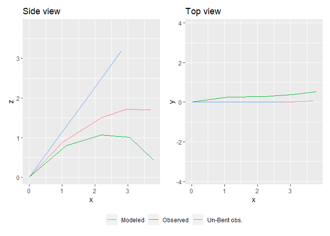
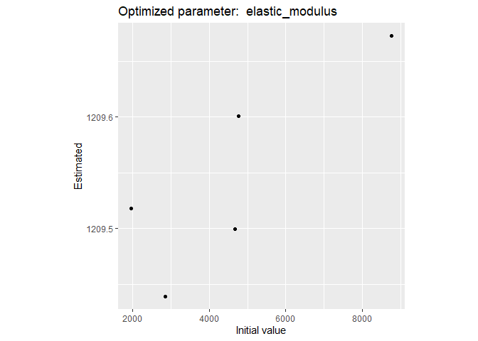
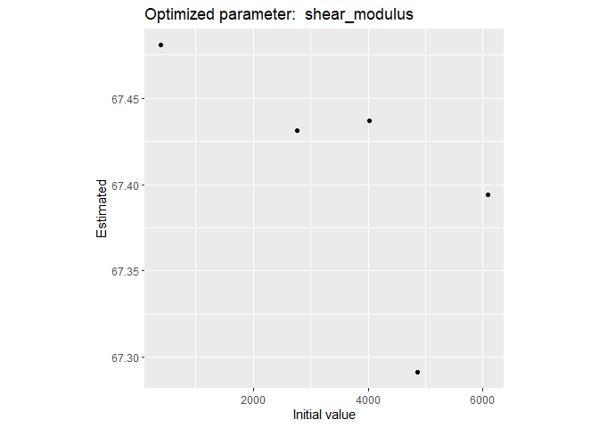

biomech aims at computing bending and torsion of beams following the Euler-Bernoulli beam theory. It is specifically designed to be applied on tree branches (or e.g. palm leaves), but can be applied to any other beam-shaped structure.
1. Installation
You can install biomech from GitHub with:
# install.packages("devtools")
devtools::install_github("PalmStudio/biomech")2. Examples
The bending function (bend()) uses two parameters: the elastic modulus, and the shear modulus. A good introduction to these concepts is available on wikipedia
In our examples, these parameters are unknown at first, but they can be computed from field data.
2.1 Example field data
2.1.1 Presentation
Our field data consist on measurements made along the leaf of a palm plant. The leaf is discretized into 5 segments. each segment is defined by a single point at the beginning of the segment representing its cross-section, with attributes such as its dimensions (width, height) and shape (=type), the distance from the last point to the current point, the inclination and torsion at the first point, the x, y and z positions of the point (used to cross-validate), the mass of the rachis and of the leaflets on the right and on the left separately.
Here is a little depiction of the information:

See (Perez 2017) for more information about the subject.
The example field data is available from the package and can be read using:
library(biomech)
file_path = system.file("extdata/6_EW01.22_17_kanan.txt", package = "biomech")
field_data = read_mat(file_path)Here is what it looks like:
#> distance type width height inclination torsion x y z mass
#> V1 0.00 1 0.07550 0.04110 48.8 4 0.000 0.000 0.00 0.0000
#> V2 1.34 2 0.03291 0.03030 48.8 4 1.110 0.250 0.79 1.3036
#> V3 1.34 3 0.01810 0.02982 48.8 4 2.196 0.275 1.07 0.6466
#> V4 0.77 4 0.01144 0.01121 48.8 4 3.056 0.380 1.01 0.1230
#> V5 0.77 5 0.00100 0.00100 48.8 4 3.791 0.530 0.42 0.0347
#> mass_right mass_left
#> V1 0.0000 0.0000
#> V2 0.1339 0.1654
#> V3 0.4388 0.4828
#> V4 0.2568 0.2411
#> V5 0.0962 0.10202.2 Bending model
We can use bend() to bend a straight beam providing initial values and known elastic and shear modulus.
We can try it out on our example leaf data. But first, we have to compute a variable that is missing from our df_unbent data.frame: the distance of application of the mass of the leaflets on the right and left sides of each segment. We can approximate this using a sine function:
# Adding the distance of application of the left and right weight (leaflets):
df_unbent$distance_application = distance_weight_sine(df_unbent$x)Know we’re ready to go with our model, using some expert knowledge to estimate the elastic and shear modulus:
# (Re-)computing the deformation:
df_bent = bend(df_unbent, elastic_modulus = 2000, shear_modulus = 400)
#> Final torsion angle at the tip (degree) = 12.528222.3 Plotting
We can now plot the results using plot_bending(). We want to compare the observed data with the simulated data. We also want to check if the straight line was right. Let’s put all three on a single plot:
plot_bending(Observed = field_data, "Un-Bent obs." = df_unbent, Modeled = df_bent)
We can even make a 3d plots using plot_bent_3d():
plot_bending_3d(Observed = field_data, "Un-Bent obs." = df_unbent, Modeled = df_bent)
OK, not bad. But the adjustment is not really that close to the measurement.
2.4 Optimization
optimize_bend() can help us find out the right values for both our parameters:
params = optimize_bend(field_data, type = "all")
#> Maximum torsion angle (degree) = 21.23896(!) Hypothesis of small displacements not verified for TORSION(!)Maximum torsion angle (degree) = 66.05235(!) Hypothesis of small displacements not verified for TORSION(!)Maximum torsion angle (degree) = 59.79778(!) Hypothesis of small displacements not verified for TORSION(!)Maximum torsion angle (degree) = 46.09996(!) Hypothesis of small displacements not verified for TORSION(!)Maximum torsion angle (degree) = 29.3099(!) Hypothesis of small displacements not verified for TORSION(!)Maximum torsion angle (degree) = 24.01283(!) Hypothesis of small displacements not verified for TORSION(!)Maximum torsion angle (degree) = 28.30911(!) Hypothesis of small displacements not verified for TORSION(!)Maximum torsion angle (degree) = 31.51136(!) Hypothesis of small displacements not verified for TORSION(!)Maximum torsion angle (degree) = 33.91736(!) Hypothesis of small displacements not verified for TORSION(!)Maximum torsion angle (degree) = 35.7381(!) Hypothesis of small displacements not verified for TORSION(!)Maximum torsion angle (degree) = 37.11682(!) Hypothesis of small displacements not verified for TORSION(!)Maximum torsion angle (degree) = 38.14507(!) Hypothesis of small displacements not verified for TORSION(!)Maximum torsion angle (degree) = 198.5444(!) Hypothesis of small displacements not verified for TORSION(!)Maximum torsion angle (degree) = 76.53029(!) Hypothesis of small displacements not verified for TORSION(!)Maximum torsion angle (degree) = 62.57131(!) Hypothesis of small displacements not verified for TORSION(!)Maximum torsion angle (degree) = 113.5204(!) Hypothesis of small displacements not verified for TORSION(!)Maximum torsion angle (degree) = 133.4081(!) Hypothesis of small displacements not verified for TORSION(!)Maximum torsion angle (degree) = 143.8365(!) Hypothesis of small displacements not verified for TORSION(!)Maximum torsion angle (degree) = 146.7137(!) Hypothesis of small displacements not verified for TORSION(!)Maximum torsion angle (degree) = 136.5098(!) Hypothesis of small displacements not verified for TORSION(!)Maximum torsion angle (degree) = 111.3382(!) Hypothesis of small displacements not verified for TORSION(!)Maximum torsion angle (degree) = 77.86732(!) Hypothesis of small displacements not verified for TORSION(!)Maximum torsion angle (degree) = 46.55959(!) Hypothesis of small displacements not verified for TORSION(!)Maximum torsion angle (degree) = 22.20298(!) Hypothesis of small displacements not verified for TORSION(!)Maximum torsion angle (degree) = 23.08456(!) Hypothesis of small displacements not verified for TORSION(!)Maximum torsion angle (degree) = 22.70732(!) Hypothesis of small displacements not verified for TORSION(!)Maximum torsion angle (degree) = 21.9388(!) Hypothesis of small displacements not verified for TORSION(!)Maximum torsion angle (degree) = 35.54625(!) Hypothesis of small displacements not verified for TORSION(!)Maximum torsion angle (degree) = 34.38083(!) Hypothesis of small displacements not verified for TORSION(!)Maximum torsion angle (degree) = 31.84451(!) Hypothesis of small displacements not verified for TORSION(!)Maximum torsion angle (degree) = 28.211(!) Hypothesis of small displacements not verified for TORSION(!)Maximum torsion angle (degree) = 23.84788(!) Hypothesis of small displacements not verified for TORSION(!)Maximum torsion angle (degree) = 31.43281(!) Hypothesis of small displacements not verified for TORSION(!)Maximum torsion angle (degree) = 30.59213(!) Hypothesis of small displacements not verified for TORSION(!)Maximum torsion angle (degree) = 28.78884(!) Hypothesis of small displacements not verified for TORSION(!)Maximum torsion angle (degree) = 26.17739(!) Hypothesis of small displacements not verified for TORSION(!)Maximum torsion angle (degree) = 22.97221(!) Hypothesis of small displacements not verified for TORSION(!)Maximum torsion angle (degree) = 60.64315(!) Hypothesis of small displacements not verified for TORSION(!)Maximum torsion angle (degree) = 55.73092(!) Hypothesis of small displacements not verified for TORSION(!)Maximum torsion angle (degree) = 44.82328(!) Hypothesis of small displacements not verified for TORSION(!)Maximum torsion angle (degree) = 30.9349(!) Hypothesis of small displacements not verified for TORSION(!)Maximum torsion angle (degree) = 23.30764(!) Hypothesis of small displacements not verified for TORSION(!)Maximum torsion angle (degree) = 26.77774(!) Hypothesis of small displacements not verified for TORSION(!)Maximum torsion angle (degree) = 29.44275(!) Hypothesis of small displacements not verified for TORSION(!)Maximum torsion angle (degree) = 31.50391(!) Hypothesis of small displacements not verified for TORSION(!)Maximum torsion angle (degree) = 33.10749(!) Hypothesis of small displacements not verified for TORSION(!)Maximum torsion angle (degree) = 34.35567(!) Hypothesis of small displacements not verified for TORSION(!)Maximum torsion angle (degree) = 21.9441(!) Hypothesis of small displacements not verified for TORSION(!)Maximum torsion angle (degree) = 21.61672(!) Hypothesis of small displacements not verified for TORSION(!)Maximum torsion angle (degree) = 52.5069(!) Hypothesis of small displacements not verified for TORSION(!)Maximum torsion angle (degree) = 49.18644(!) Hypothesis of small displacements not verified for TORSION(!)Maximum torsion angle (degree) = 41.78473(!) Hypothesis of small displacements not verified for TORSION(!)Maximum torsion angle (degree) = 31.90912(!) Hypothesis of small displacements not verified for TORSION(!)Maximum torsion angle (degree) = 21.34358(!) Hypothesis of small displacements not verified for TORSION(!)Maximum torsion angle (degree) = 21.61303(!) Hypothesis of small displacements not verified for TORSION(!)Maximum torsion angle (degree) = 23.95111(!) Hypothesis of small displacements not verified for TORSION(!)Maximum torsion angle (degree) = 25.81953(!) Hypothesis of small displacements not verified for TORSION(!)Maximum torsion angle (degree) = 27.31975(!) Hypothesis of small displacements not verified for TORSION(!)Maximum torsion angle (degree) = 26.48967(!) Hypothesis of small displacements not verified for TORSION(!)Maximum torsion angle (degree) = 25.95439(!) Hypothesis of small displacements not verified for TORSION(!)Maximum torsion angle (degree) = 24.83348(!) Hypothesis of small displacements not verified for TORSION(!)Maximum torsion angle (degree) = 23.19612(!) Hypothesis of small displacements not verified for TORSION(!)Maximum torsion angle (degree) = 21.1415(!) Hypothesis of small displacements not verified for TORSION(!)Here are our optimized values:
params
#> $elastic_modulus
#> [1] 1209.494
#>
#> $shear_modulus
#> [1] 67.34194
#>
#> $init_values
#> elastic_modulus shear_modulus
#> 1 9977.795 895.3104
#> 2 2549.910 1205.8976
#> 3 5706.925 9881.9808
#> 4 7218.320 5553.8840
#> 5 1220.196 5441.8022
#>
#> $optim_values
#> [,1] [,2]
#> [1,] 1209.740 67.42357
#> [2,] 1209.133 67.37590
#> [3,] 1209.385 67.34608
#> [4,] 1209.494 67.34194
#> [5,] 1209.446 67.54574
#>
#> $min_quadratic_error
#> [1] 0.3787923
#>
#> $rep_min_crit
#> [1] 4
#>
#> $plots
#> $plots[[1]]

And here is a the resulting plot:
df_bent_optim = bend(df_unbent, elastic_modulus = params$elastic_modulus,
shear_modulus = params$shear_modulus)
#> Final torsion angle at the tip (degree) = 53.87164
plot_bending(Observed = field_data, "Un-Bent obs." = df_unbent,
Modeled = df_bent,
"Modeled (optimized)" = df_bent_optim)